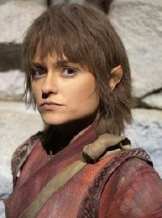

| Kara Zediker |
| Episodi |
| Awakening Kir'Shara Amok Time Darkling |
| Personaggi |
| Spock |
| Specie |
| Vulcaniani |
| Romanzi |
| Yesterday's Son |

T'Pau |
|
|||||||||
|  | |||||||||
|
|
Membro dei Syranniti nel 2154,
è diventata in seguito un diplomatico, un giudice, una filosofa e una dignitaria di altissimo rango,
dimostranodosi una delle menti più razionali nella storia di
Vulcano, ma inflessibile nell'applicazione dei suoi principi
(Darkling). Dopo lo scioglimento dell'Alto
Comando è stata nominata ministro (United). È stata la sola persona ad aver mai rifiutato un seggio nel Consiglio
della Federazione ed ha presieduto al rituale
vulcaniano conseguente al pon farr
di
Spock nel
2267 (Amok
Time).
È stata intitolata a suo nome almeno un'astronave
vulcaniana, la
T'Pau NSP-17938
(Unification).
Una subroutine della sua personalità è entrata a far
parte temporaneamente del programma del
Dottore della Voyager
(Darkling).